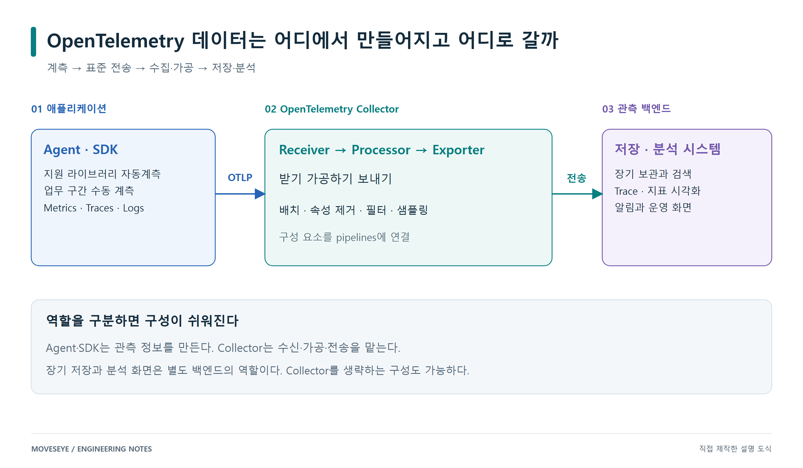
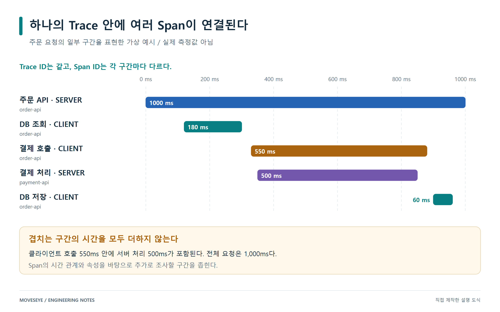
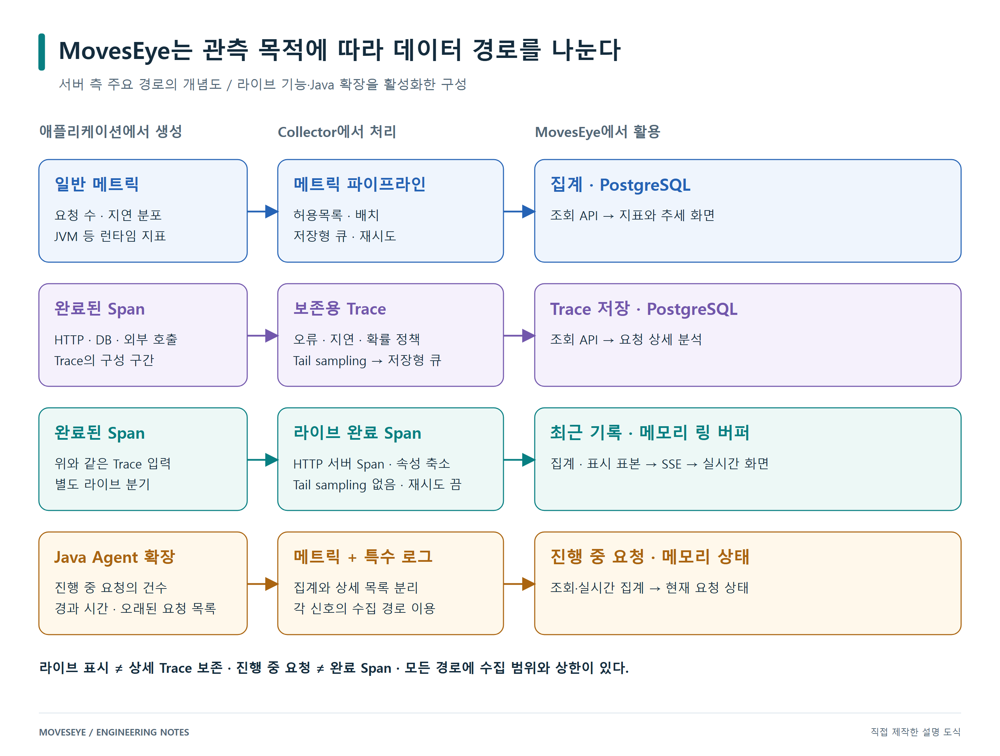
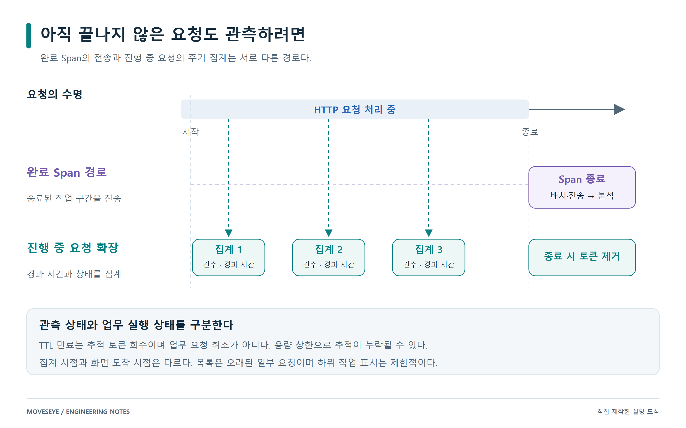

MOVESEYE ENGINEERING / BLOG KIT
MovesEye와 OpenTelemetry
기술 블로그 원고
독립적으로 게시할 수 있는 글 두 편과 편집 가능한 도식 네 장입니다.
01 · 개념 편
OpenTelemetry로 이해하는 애플리케이션 관측의 기본
Metrics·Traces·Logs, Agent·SDK·Collector, 컨텍스트 전파와 샘플링을 주문 요청 예시로 설명합니다.
원고 읽고 복사하기 Markdown02 · 구축 편
OpenTelemetry를 활용한 MovesEye APM 구축 이야기
실시간·보존 경로의 분리, 진행 중 요청 확장, 재시도와 마스킹에서 얻은 교훈을 설명합니다.
원고 읽고 복사하기 Markdown본문에 넣을 그림
PNG는 고해상도 2배 크기입니다. draw.io에서 도형과 문구를 수정할 수 있습니다.
가상의 요청 수치는 예시로 표시했으며, 제품 화면 캡처로 표현하지 않았습니다.


OpenTelemetry 데이터는 어디에서 만들어지고 어디로 갈까
PNG · SVG · draw.io 원본



하나의 Trace 안에 여러 Span이 연결된다
PNG · SVG · draw.io 원본



MovesEye는 관측 목적에 따라 데이터 경로를 나눈다
PNG · SVG · draw.io 원본



아직 끝나지 않은 요청도 관측하려면
PNG · SVG · draw.io 원본